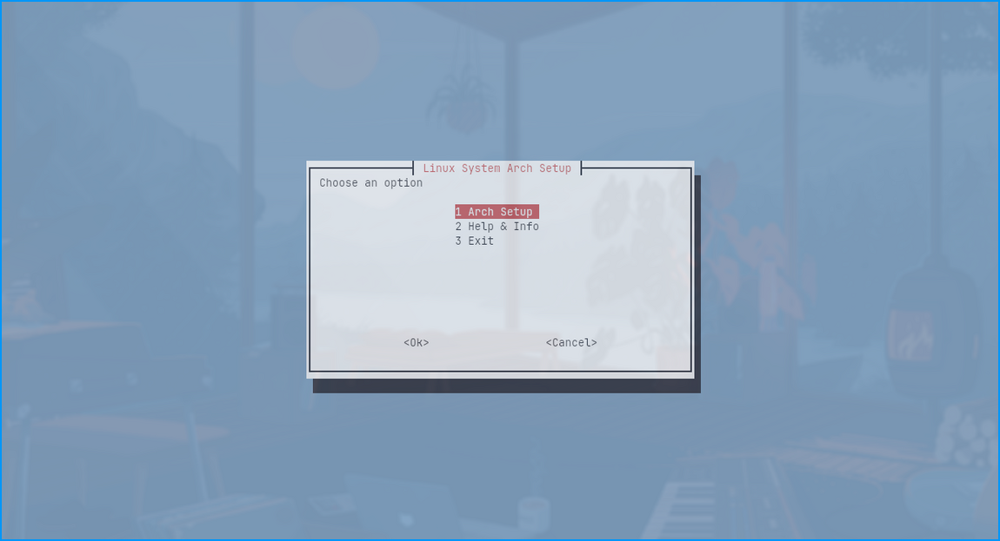

Introduction
Carch is a modular Bash script designed to streamline the initial setup of Arch and Arch-based Linux systems. With a TUI, package automation, and environment configurations, Carch helps users configure their systems efficiently.

Features
- Quick Setup: Simplifies the installation of essential packages.
- Enhanced TUI Navigation: Color-themed TUI makes navigation and setup easier.
- Preconfigured Scripts: Supports configurations for popular setups like Dwm and Hyprland.
- Continuous Updates: Regular updates and new features based on community feedback.
Installation
To install Carch, run the following command in your terminal:
bash <(curl -L https://chalisehari.com.np/carch)
After installation, launch Carch by running:
carch
Note: Carch is designed for Arch and Arch-based Linux systems.
Usage
Once installed, launch Carch with carch in your terminal.
Tip: You only need to install Carch once; simply type carch to access it anytime.
Advanced Usage
Hyprland Setup with Output Display
The Hyprland setup provides step-by-step guidance in the TUI output section, including a prompt:
Do you want to continue? (y/n)
Roadmap
Stay informed about upcoming features and improvements on our roadmap.
Contributing
We welcome contributions! Please read the CONTRIBUTING.md for more details.
License
Carch is licensed under the Apache-2.0 License. For more information, view the LICENSE file.